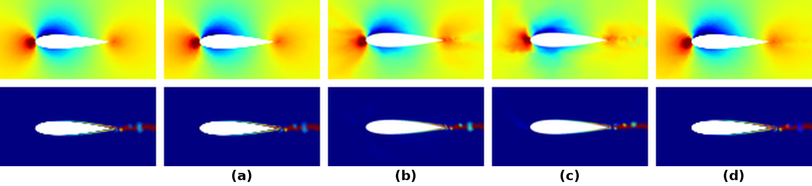

Abstract
Surrogate models approximate the solutions of partial differential equations given a certain geometry and boundary conditions. Traditional transformer-based approaches employ a single mixing mechanism to the whole solution. although the solution fields exhibit variations across multiple spatial scales. We propose a mixture of transformer experts that combines a routing mechanism with multiscale supervision. Specifically, the individual experts are routed through a controller that utilizes learnable Laplacian matrices to compute weights that are subsequently used to define a weighted sum of the experts for the output feature vectors at each point of the domain. Subsequently, a decoder receives the weighted sum of the experts output and predicts the solution fields. During training, the reference fields are decomposed into components at different spatial scales by repeated smoothing with a mesh Laplacian. We evaluate our approach on the official AirFRANS dataset using remeshed solution domains leading to unstructured triangular meshes of \(4.9\)k vertices. The experimental outcomes reveal lower mean relative \(L_2\) error and interior mean squared errors among the compared models of this study. Code and data are publicly available in https://github.com/snousias/hodge-moe-pde.
Experiments
Simulation Setup
We evaluate our approach on the AirFRANS [1] dataset, generating anisotropic triangular working meshes with gmsh [33], each with approximately \(4.9\)k vertices and refinement near the airfoil, and interpolate the reference fields onto them. Since, the data is two-dimensional, we embedded and additional third dimention at \(z=0\). We use the official \(800/200\) split. Additionally, we employ a data augmentation technique by calculating 16 remesh alternatives. During training one of them is used at random every epoch.
Per-field relative \(L_2\) and \(R^2\) are evaluated in physical units. Volume and Surface metrics are mean squared errors of the physical prediction error divided by the per-field standard deviation of the physical targets over the training set, taken over the non-wall and the wall vertices respectively. We also report the relative error of the lift coefficient across test cases. All models are evaluated against interpolated targets on the same working meshes, so these numbers are not directly comparable with benchmark scores computed on the original meshes.
Our checkpoint is selected from \(20\) checkpoints by test-set error, whereas the baselines use validation-based selection. The model is trained on all \(800\) training cases, \(80\) cases are reserved for validation. Training uses AdamW [34] with a one-cycle schedule [35] for \(400\) epochs and one mesh per batch. Autocast runs in bfloat16, while the incidence and analyzer operations stay in fp32. Each run uses one NVIDIA RTX 4090 with \(24\) GB of memory. Full settings are given in Experimental Protocol.
| model | params | mesh use | \(\text{rel-}L_2\downarrow\) | \(R^2\uparrow\) | Volume\(\downarrow\) | Surf\(\downarrow\) | \(C_L\downarrow\) | \(\rho_L\uparrow\) |
|---|---|---|---|---|---|---|---|---|
| Transolver [17] | \(6.00\)M | none | 0.0436 | 0.9953 | 0.00265 | 0.00143 | 0.0103 | 0.99989 |
| PointNet [36] | \(0.08\)M | none | 0.0689 | 0.9904 | 0.00451 | 0.00440 | 0.0149 | 0.99965 |
| Pointwise MLP | \(0.02\)M | none | 0.1743 | 0.9404 | 0.03576 | 0.03969 | 0.0860 | 0.99338 |
| PSD-star HodgeFormer [21] | \(0.47\)M | operator | 0.0800 | 0.9885 | 0.01028 | 0.01048 | 0.0681 | 0.99883 |
| Hodge-routed MoE (ours) | \(3.02\)M | router | 0.0300 | 0.9983 | 0.00140 | 0.00164 | 0.0225 | 0.99988 |
Results
Table 1 compares the models on the official split. Our model has the lowest relative \(L_2\) error and the lowest interior mean squared error of the five, \(31\%\) and \(47\%\) below Transolver at half its parameter count. Transolver has the lower error on the two wall quantities, by a factor of \(1.14\) on the surface error and \(2.2\) on the lift coefficient. The fourth row is a HodgeFormer surrogate, which keeps the learned Hodge Laplacian in the prediction path. The per-field breakdown is given in full in the supplementary material. Specifically, the proposed method demonstrates the lowest relative \(L_2\) error on three of the four fields and the second lowest on \(u_y\), and the largest difference is on the eddy viscosity. The aggregate is the mean over the four fields.
Figure 2 shows one test case at the reported checkpoint, with the reference, prediction, and absolute error for each field. Its per-field relative \(L_2\) errors are \(0.0047\), \(0.0260\), \(0.0281\), and \(0.0676\), compared with test-set means of \(0.0056\), \(0.0259\), \(0.0255\), and \(0.0629\). Visible errors occur near the airfoil and along the turbulent-viscosity wake.
![One test case at the reported checkpoint (epoch \(380\) ). Columns are the reference, the prediction and the absolute error; rows are \(u_x\) , \(u_y\) , \(p\) and \(\nu_t\) . All panels are on the model’s own working mesh in physical units, with the reference and the prediction sharing each field’s colour scale. The per-field relative \(L_2\) for this case is \(0.0047\) , \(0.0260\) , \(0.0281\) and \(0.0676\) . Test-set means are listed in [tab:appendix-perfield] ; the panel illustrates one case rather than a test-set average.](assets/images/v57_qual_case0_full.png)
Figure 3 places the four models beside the CFD reference on a common colour scale. The models separate more on the turbulent viscosity than on the pressure: the mean relative \(L_2\) over the \(200\) test cases is \(0.063\), \(0.116\), \(0.144\) and \(0.155\) on \(\nu_t\) for (a)–(d), against \(0.026\), \(0.030\), \(0.066\) and \(0.085\) on \(p\). The reference carries fine-scale structure in the \(\nu_t\) wake, and the ordering of the panels on that field follows the ordering of those errors.

CFD reference
—
\(\mathrm{rel}\text{-}L_2(p)=0.026\)
\(\mathrm{rel}\text{-}L_2(\nu_t)=0.063\)
\(\mathrm{rel}\text{-}L_2(p)=0.030\)
\(\mathrm{rel}\text{-}L_2(\nu_t)=0.116\)
\(\mathrm{rel}\text{-}L_2(p)=0.066\)
\(\mathrm{rel}\text{-}L_2(\nu_t)=0.144\)
\(\mathrm{rel}\text{-}L_2(p)=0.085\)
\(\mathrm{rel}\text{-}L_2(\nu_t)=0.155\)